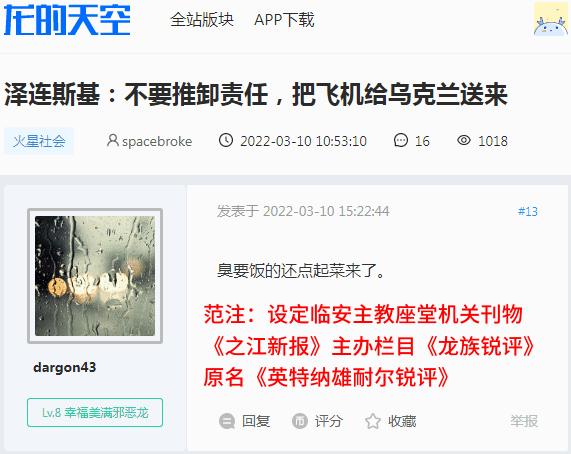
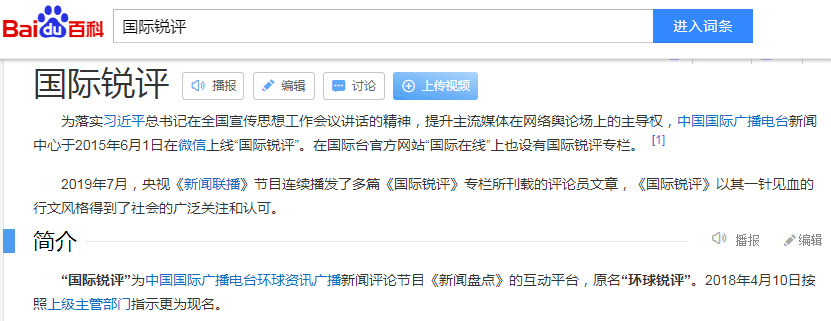
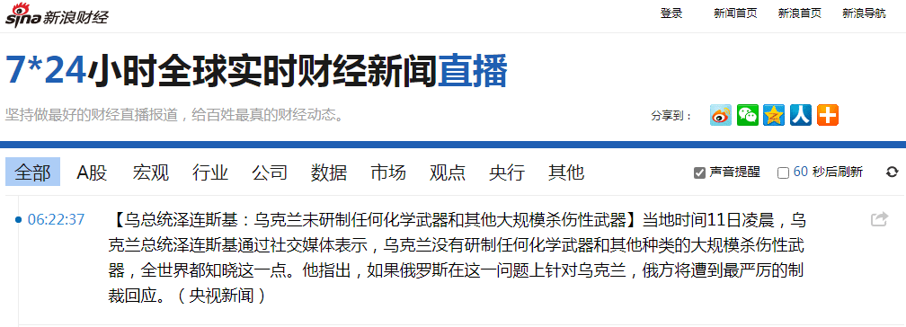
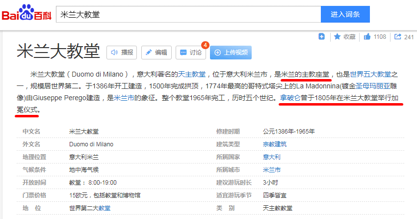
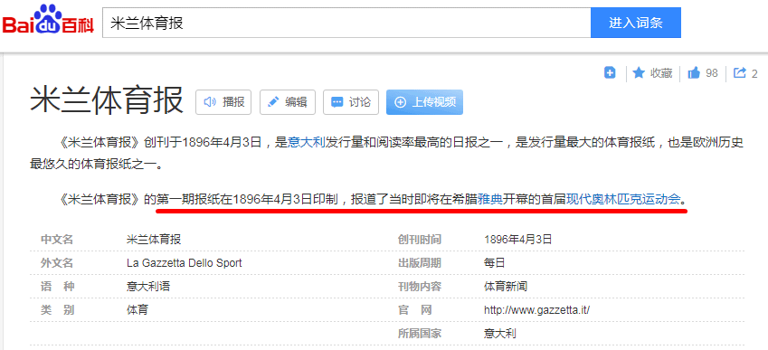
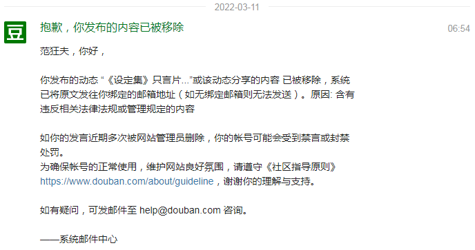

前一篇
目录
后一篇
主页
［
20220311
］《设定集》只言片语：米兰主教座堂机关刊物《伦巴第新报》锐评基辅盖特曼“臭要饭的还点起菜来了”
可萨汗国在行动：党の喉舌之创刊号就要高举紧跟奥林匹斯山祭司委员会韬光养晦两千年之后首次公开亮相粉墨登场
具体线索已经编织进正文许多了，包括但不限于「英特纳雄耐尔就一定要夺冠，英特纳雄耐尔就一定要卫冕」文体两开花系列重要主旋律正能量，这里不再重复。






亦当删去
2022-03-11 06:54:47